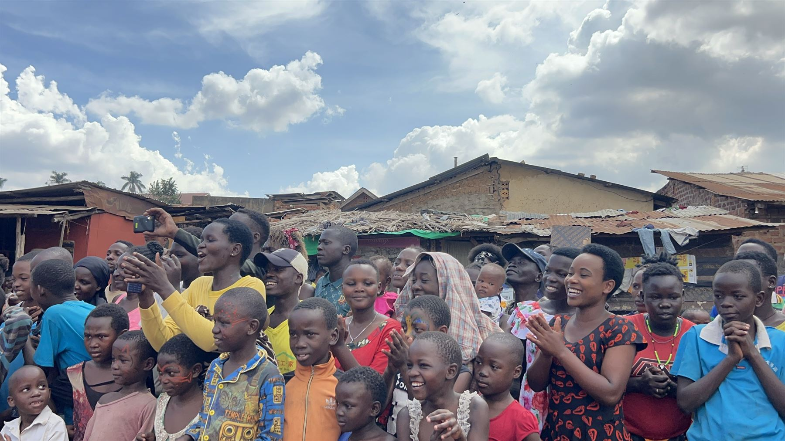
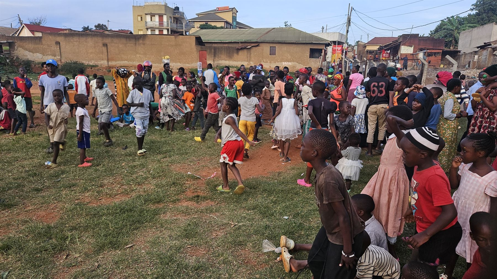
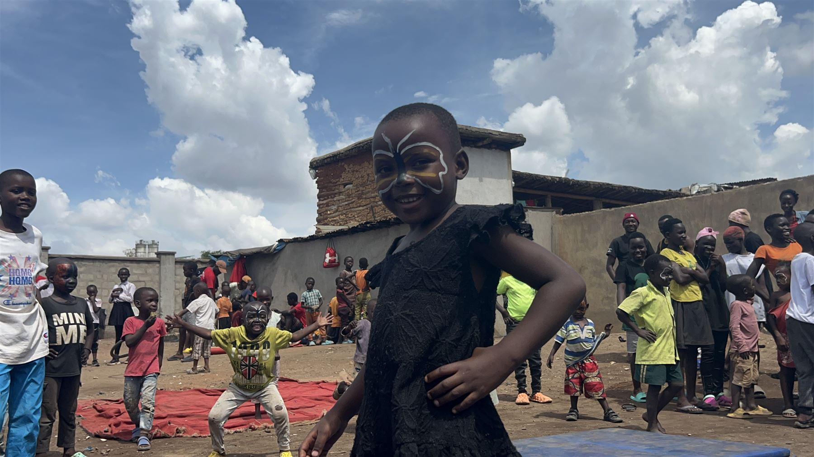
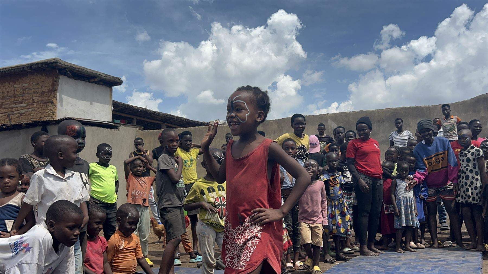
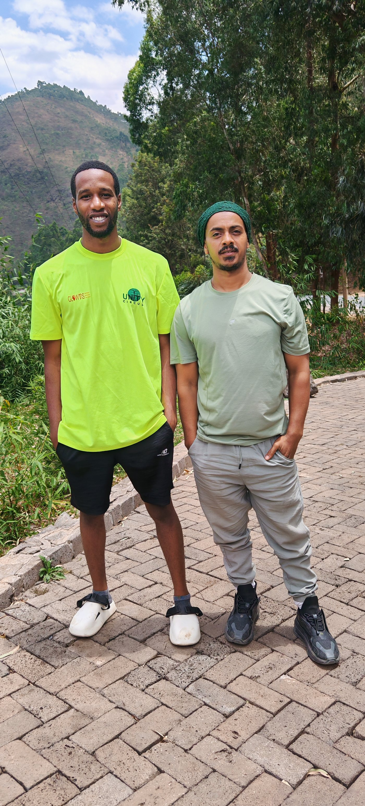
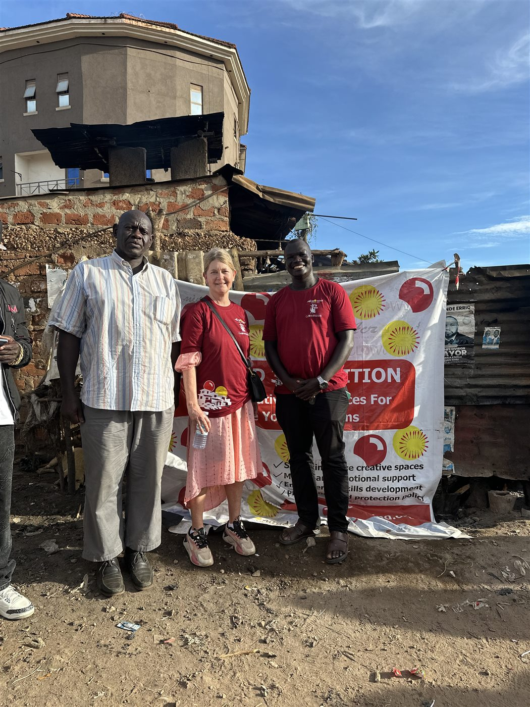
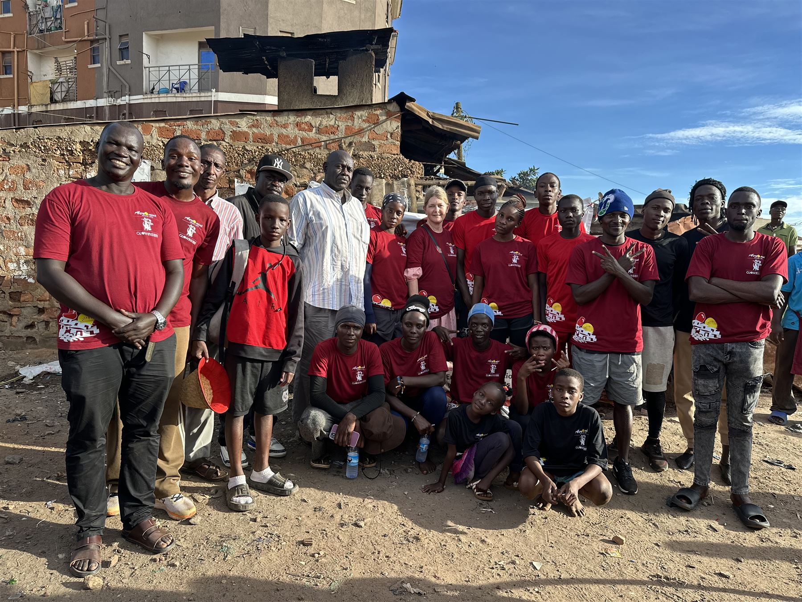
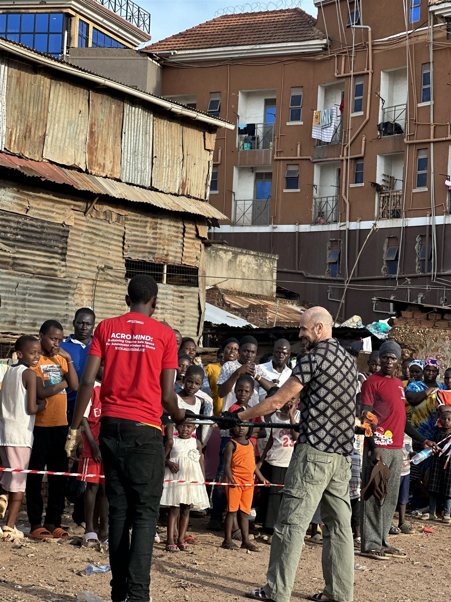
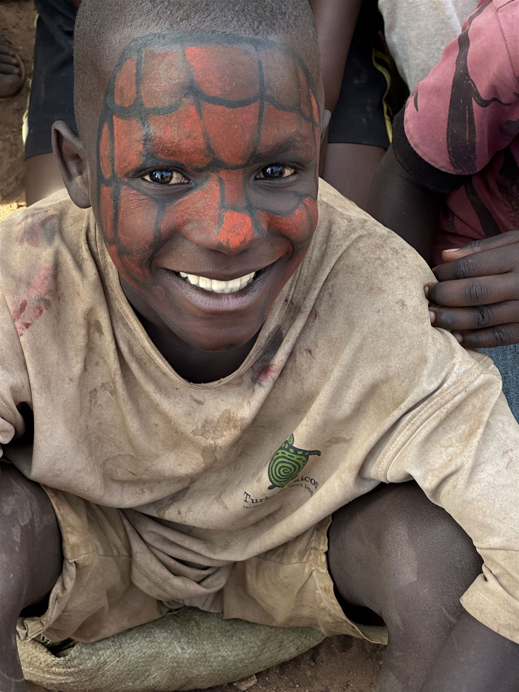

Spotlight
Where confidence takes centre stage
In every workshop, the smallest step can become a leap. Our young performers are finding new ways to express themselves and imagine what comes next.
Read the latest storyEvents and news
Follow the people, performances, and partnerships shaping Acromind Initiative.
Spotlight
In every workshop, the smallest step can become a leap. Our young performers are finding new ways to express themselves and imagine what comes next.
Read the latest story








Artistic Exchange Camp · Rwanda
Project Manager, International Programs at Clowns Without Borders Sweden.
Donna-Maria works with international artistic and cultural programs that use clowning, circus, play and creative exchange to support children and communities in vulnerable situations. Her work includes international partnerships, artistic exchange and clown-camp initiatives connecting artists across countries.
With appreciation from Acro Mind Initiative
Project Manager, International Programs — Clowns Without Borders Sweden
Donna-Maria Maalouf is one of the remarkable people we had the opportunity to meet and work alongside during the Artistic Exchange Camp in Rwanda.
Her dedication to bringing people together through art, creativity, laughter and cultural exchange was one of the things that made the camp such a memorable experience for us at Acro Mind Initiative.
Donna-Maria created an environment where artists from different countries and backgrounds could meet as equals, exchange experiences, learn from one another and build meaningful connections. Her work reflects a powerful belief that art and human connection can create spaces of hope, especially for children and communities facing difficult circumstances.
For us, Donna-Maria was more than a project manager. She was a wonderful collaborator, a thoughtful listener and someone who helped make the camp feel like a true international community.
We deeply appreciate the warmth, professionalism, encouragement and positive energy she brought to the camp. The opportunity to learn, laugh, create and share alongside people from different parts of the world is an experience we will carry with us for a long time.
Thank you, Donna-Maria, for being part of this journey and for the important work you continue to do through Clowns Without Borders.
With appreciation from everyone at Acro Mind Initiative. ❤️

Artistic Exchange Camp · Rwanda
At the artistic exchange in Rwanda, we had the opportunity to meet Drier Emile from Unity Circus. The gathering brought artists together to exchange ideas, share creative practice, and connect across organisations.
We are grateful to Drier for being part of that experience, and we value the connection with Unity Circus.

Sweden–Uganda partnership
AcroMind Initiative Limited was honoured to welcome H.E. Maria Håkansson, Ambassador of Sweden to Uganda, during a community engagement in Bwaise, Kampala.
The visit provided an opportunity to showcase AcroMind's work with vulnerable children and young people through creative, inclusive and empowering activities. Together with our partner, Clowns Without Borders Sweden, we are committed to creating safe spaces where children and young people can play, express themselves, build confidence and discover their potential.
We are deeply grateful to H.E. Maria Håkansson for taking the time to visit the community, engage with the children and young people, and witness the work being done through this partnership.
Her visit was a meaningful moment for AcroMind and the community we serve, and it strengthened our commitment to using creativity, play and human connection to create opportunities for children and young people to thrive.
Bwaise community visit
Community leaders, guests, and creative activities from Acromind Initiative's work in Bwaise.



Calendar
A shared day of workshops and performances for families and young people.
Young performers take the stage to celebrate a season of learning.
A conversation about building creative opportunities together.